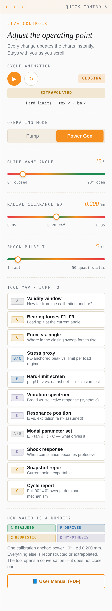

It is an opener, not a final authority. It shows which damage mechanism plausibly governs a load situation and where an elastic bearing may outperform a rigid one — or the other way round. It does not predict service life, it does not compute exact forces away from its single calibration point, and it does not claim to replace machine data, FE or CFD. What it cannot represent, it does not pretend to represent: every number on screen carries its own evidence class.
The right outcome of a session with this tool is therefore not a material decision but a better next question: which measurement, which drawing, which operating data would settle the point that the tool made visible.
How to use this manual: Chapter 1 explains the toolbar, your permanent entry point. Chapter 2 explains how valid a number is. Chapter 3 goes through every section of the tool — what you see, what you can assess, what you cannot. Chapter 4 gives a short conversation workflow.
On desktop the toolbar is a sidebar on the right edge; it stays in place while you scroll. Click the header strip (› › › QUICK CONTROLS) to collapse it to a thin strip and click again to expand it; the tool remembers your choice. On narrow desktop windows (below approx. 1100 px) it starts collapsed. On iPad and phone the same controls sit in a bottom bar with a compact jump row.

The tool separates what was measured, what follows from it by calculation, what is an approximation and what is an assumption. Every card carries one of these badges.
| Class | Meaning | In plain words | How to use it |
|---|---|---|---|
| A · Measured | Measured or digitised from a traceable source case (test report, FE result, DMA datasheet). | A real data point. | Quote it — with its source and conditions. |
| B · Derived | Dimensionally valid calculation from A-level inputs (e.g. p = F / (d·L)). | Plausibly derived — only as good as its inputs. | Use for screening; check the inputs. |
| C · Heuristic | Calibrated fit or proxy that preserves a directional pattern — not a precise value. | An approximation anchored to one data point. | Read the trend and the direction, not the digits. |
| D · Hypothesis | Scenario to reveal a possible mechanism — qualitative only. | An estimate based on assumptions and experience. | Use to ask the question — then measure. |
| A/D · Mixed | Parameter set combining datasheet values (A) with assumed modal values (D). | Partly real, partly assumed. | Check which line is which. |
The entire model rests on one calibrated operating point: power mode · 0° (closed) · Δd 0.200 mm. At this point forces and FE peak stresses are reproduced. Away from it, curve shapes are reconstructed and values extrapolated. The validity pill shows how far you are away:
| Parameter | Calibrated anchor | Near anchor | Extrapolated | Far extrapolation |
|---|---|---|---|---|
| Clearance Δd | 0.200 mm (± 0.0025) | ± 0.025 mm | ± 0.075 mm | beyond ± 0.075 mm |
| Guide-vane angle | ≤ 2° | ≤ 10° | > 10° | — |
| Operating mode | Power generation | — | Pump (no anchor) | — |
The worst of the three parameters sets the overall level. Example: 15° in power mode at 0.200 mm is already Extrapolated — because of the angle.
| Section | Class | Question it answers | Robust takeaway |
|---|---|---|---|
| Validity window | meta | How far am I from the anchor? | Read before anything else. |
| 01 Bearing forces F1–F3 | C | How is the load split between the three bearings? | F2 (middle, nearest the vane) carries most; F3 stays low. |
| Force vs. angle | C | Where in the closing sweep do forces rise? | Forces ramp in the closing phase (~28°→18°) and plateau near closed. |
| 02 System reaction (L2) | C | Which material shows the higher overall load index? | Comparison index only — not a physical resultant. |
| 03 Stress proxy | B/C | How does the local FE peak compare with the limit of the chosen load regime? | bm concentrates stress; tex spreads it. Regime choice flips the limit ranking. |
| 03B Hard-limit screen | B | Does a material fail p, pU or v against its datasheet? | Exclusion test. Capacity rarely decides — mechanisms do. |
| Vibration spectrum | D | Broad or selective vibration behaviour? | Character only; synthetic, no physical unit. |
| Resonance position | D | Where does f₀ sit relative to excitation fa? | bm's resonance advantage depends on clearance. |
| Modal parameter set | A/D | Which material parameters drive the dynamics? | High damping (tex) vs. high stiffness (bm). |
| Shock response | D | When does compliance protect? | Short impulses (< ~10 ms): tendency tex. Long: bm. |
| Reports 01 / 02 | C | Snapshot / full-cycle summary for sharing | Always carries the validity header — keep it attached. |
| Scenario I/O | — | Save, share, restore a scenario | Reproducible customer conversations. |
F1 (lower), F2 (middle, nearest the guide vane), F3 (upper) in kN for both materials at the current angle, plus the full closing trajectory. Play draws the curve live like an oscilloscope.
Load distribution and the phase in which forces rise. In the model tex develops higher absolute forces (compliance lets the shaft deflect), bm stays lower. Δd reacts differently: tex pivots around its optimum (~0.15 mm), bm scales more uniformly (optimum ~0.12 mm).
Exact forces away from 0° / 0.200 mm / power mode. Curve shape is reconstructed around one anchor. Use relative statements, not kN values, for anything but the anchor.
√(F1² + F2² + F3²) per material and the percentage difference.
A single comparison number within this model — useful to follow how the gap between the materials changes with angle and Δd.
It is not a physical force resultant: the reactions act at different bearings.
FE-anchored local peak stress per material against the limit of the selected regime (static · dynamic · impact). At the anchor the FE values 54.4 MPa (tex) / 116.1 MPa (bm) are reproduced → class B there, C elsewhere.
tex distributes load over a broader footprint, bm concentrates it. The regime flips the ranking of the limits: static favours bm (280 vs. 230 MPa), dynamic favours tex (140 vs. 100 MPa). Select the regime first, then compare.
A local peak stress is not projected bearing pressure — utilisation here is indicative. No impact limit is published; the impact setting shows the dynamic limit as a floor and is a test requirement, not a margin.
Projected pressure p = F2 / (d·L), sliding speed v and pU per material vs. datasheet limits, with PASS / FAIL. Inputs: bore d, bearing length L, swing β, cycle frequency f.
A non-compensatory exclusion: a material that fails a hard limit is out, whatever its mechanism advantages. If both pass, capacity does not decide — the mechanisms (edge loading, damping, shock) do.
Geometry is a placeholder until you enter the real d × L. F2 is model-derived (C away from the anchor). bm limits come from the manual table; bm datasheet not yet in the source pack. No lifetime implied.
Synthetic PSD curves at the three bearing positions, switching with the operating mode; dominant peak at 47 Hz in power mode.
Character, not magnitude: tex shows broader bandwidth with more peaks; bm a narrower, more selective response — calm unless f₀ meets the excitation. Measured reference ratio tex/bm ≈ 1.58 at the anchor.
Spectra are illustrative, have no physical unit and are not derived from |H(f)|. Aggregated over the closing operation, not instantaneous.
Natural frequency f₀ of each material vs. dominant excitation fa (47 Hz power mode), with zones: resonance (±7 Hz), transition, safe (> 2·fa).
At the anchor tex sits close to fa (~49 Hz) but is heavily damped (Q ≈ 3.8); bm sits higher (~62 Hz) with a sharp Q ≈ 50. bm's advantage is clearance-conditional: bm's f₀ drops about twice as fast with Δd (−120 vs. −60 Hz/mm) and can fall into the resonance zone at wide clearance.
f₀ is assumed — back-calculated from one PSD ratio, which cannot uniquely identify two natural frequencies. No resonance prediction; only a modal impact test on the installed system can tell.
E′, tan δ, ζ, Q, f₀, |H(fa)| and friction coefficient per material (DMA reference at 50 Hz, room temperature).
The physical reason behind all dynamic sections: tex = low stiffness (E′ ≈ 3.5 GPa), high damping (tan δ ≈ 0.26); bm = high stiffness (≈ 105 GPa), low damping (≈ 0.02). Everything dynamic in the tool follows from this contrast.
Which line is measured and which assumed must be read per value: modulus from datasheet (A), f₀ and damping fitted (D). No temperature dependence.
Normalised force response to a pulse of duration τ (1 ms cavitation … 50 ms quasi-static), optional shock patterns during the sweep (cavitation, vortex, water hammer, mixed; density, intensity, seed).
Where the verdict swaps: for short impulses (< ~10 ms) compliance becomes protective — tendency toward tex (peak reduction in the order of one third); for long pulses stiffness dominates — tendency toward bm. This is the section where "elastic or rigid" is decided by the event spectrum.
Single-degree-of-freedom, first-order filter (τ_char ≈ 5 ms) — qualitative only. No fatigue accumulation. Requires a site-specific shock spectrum to become an argument.
Report 01 captures the current point, Report 02 the full 90° → 0° sweep with dominant failure-mode assessment. Both export as PDF / text. Scenario I/O saves state + full sweep (1° steps) as JSON.
A shareable, reproducible record of a conversation — which point was discussed, under which assumptions. The sweep export can be analysed in Excel or Python.
Reports combine C- and D-class modules. Every report carries a validity header — never forward a report without it.
Calibration anchor from a manufacturer test report on these compound classes (Pereira, HYDRO 2025 — source pack pending): FE contact pressure at closed position (54.4 MPa tex / 116.1 MPa bm), PSD spectra at Δd 0.200 mm (47 Hz dominant peak, ratio tex/bm 1.58), bearing forces F1–F3 across angle. Material limits: tex 552 W87.00 bushing column; bm 392 per DEVA manual table 3.1.B. DMA reference data at 50 Hz, room temperature. All other values are reconstructed, extrapolated or assumed as labelled in the tool.